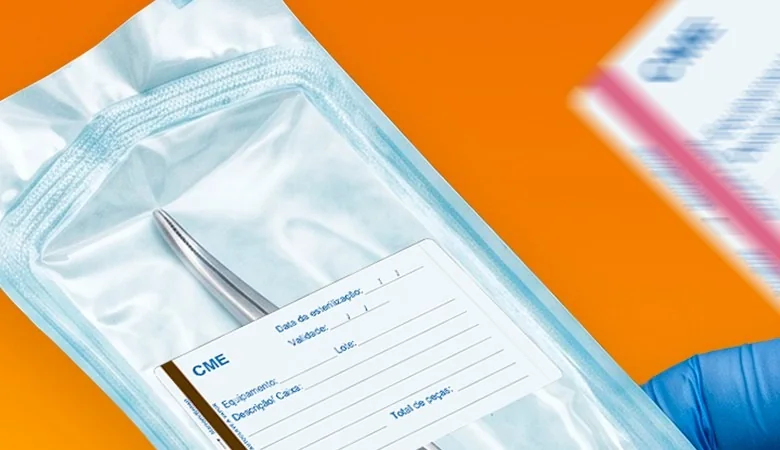
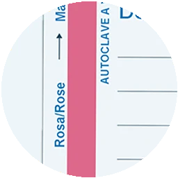
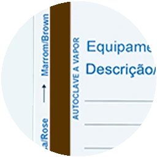
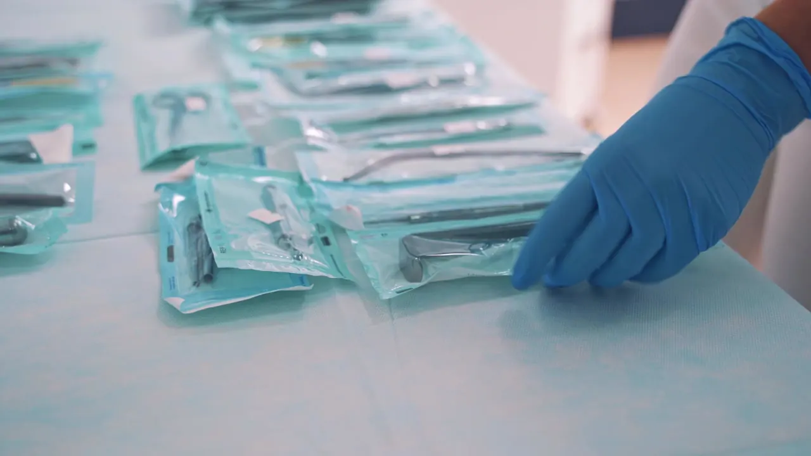
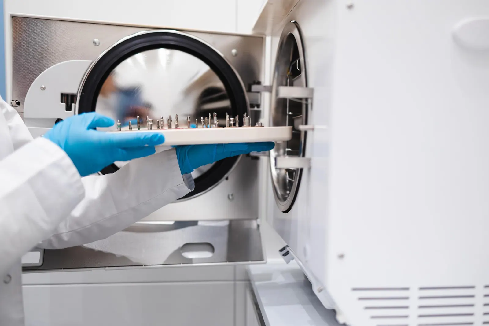
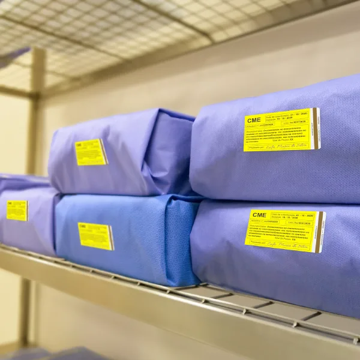
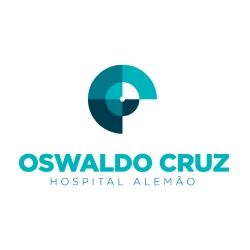
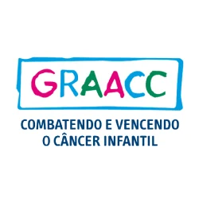

CME
Ver produtos
Linhas de produto
Encontre a linha certa para o seu processo.

DENTAL
Ver produtos
RÓTULOS
Ver produtos

PULSEIRAS
Ver produtos

CONVERSÃO
Ver produtos
P&D
Ver produtos
Indicador químico Tipo 1
Entenda como funciona a mudança de cor na esterilização.
Na etiqueta grafMED, a faixa indicadora sai da fábrica rosa e fica marrom depois do ciclo a vapor. A leitura é imediata para a equipe da CME.
Ciclo de esterilização a vapor25 °C
CargaAquecimentoEsterilizaçãoSecagem
Arraste ou role a página para simular.



Antes do processoDepois do processo
Rastreabilidade de ponta a ponta
O ciclo completo, do preparo ao prontuário.
- 01
Preparo
O material é limpo, inspecionado e embalado.
- 02
Identificação
A etiqueta grafMED registra lote, data, validade e responsável.
- 03
Esterilização
Na autoclave, o indicador químico Tipo 1 muda de cor.
- 04
Armazenamento
Pacotes identificados e organizados até o uso.
- 05
Prontuário
A parte destacável vai para o registro do paciente.



Mais vendido da semana · semana
Destaque da semana
+20anos de mercado
100%tecnologia nacional
+1.000formatos de etiquetas
19cores de fitas identificadoras
Quem confia
A confiança de quem é referência no mercado.








Qualidade e prazo sempre mantidos. A equipe confia na leitura do indicador.
A conversão tirou uma etapa inteira da nossa linha de montagem.
Atende à nova RDC sem complicar a rotina do consultório.
FAQ
Perguntas frequentes
Não achou a sua dúvida? Um especialista responde pelo WhatsApp.
Perguntar no WhatsApp Ver todas as perguntasQual etiqueta usar na autoclave a vapor?
A Etiqueta Duplo Uso para Esterilização a Vapor tem indicador químico Tipo 1 que muda de rosa para marrom ou preto e dupla camada adesiva: uma parte fica no pacote e a outra vai para o prontuário.
A linha grafDENTAL atende à nova RDC 1002?
Sim. As etiquetas grafDENTAL foram desenvolvidas para que o consultório registre cada ciclo de esterilização conforme a RDC 1002/2025.
Como funciona o serviço de conversão de matéria-prima?
Você envia a bobina ou o rolo de material. A grafMED corta, monta, embala e entrega pronto para uso ou revenda.
A grafMED fabrica caixas, sacolas ou embalagens?
Não. A grafMED fabrica etiquetas, rótulos, fitas, indicadores, pulseiras e faz conversão de matéria-prima.